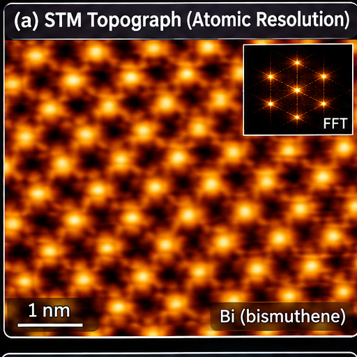

What we explore
Themes of Our Research
Exploring quantum materials through synthesis, atomic-scale imaging and measurements of their electronic and magnetic properties.
From the group
News and Updates
 News image
News image
DATE · MONTH YEAR
News headline goes here
Add a short introduction to this announcement. Keep it to two or three lines on the homepage.
See details → News image
News image
DATE · MONTH YEAR
Publication or research update
Use this space for a recent publication, research highlight or important group announcement.
See details → News image
News image
DATE · MONTH YEAR
Conference, award or group activity
Add a brief summary here, with the full story, photographs or relevant links on the details page.
See details →